Тибет
ТИБЕТ 西藏
К оглавлению
Тибет — Кайлаш, маршрут коры
Маршрут вокруг горы Калас
https://tours.chilan.ru/avtorskij-tur-tibet-kora-vokrug-kajlasha-lhasa/
Почему это путешествие особенное:
- Священная Кора вокруг Кайлаша: 52 км паломничества вокруг горы, которую почитают 4 мировые религии
- Озера Манасаровар и Ракшастал: омовение в озёрах жизни и смерти на высоте 4580 м
- Посещение Лхасы: дворец Потала и храмы, где оживает история
- Культура и природа: древние монастыри, храмы, пещеры и пейзажи Тибетского нагорья
- Лхаса аэропорт: прилёт в самый высокогорный аэропорт мира на высоте 3600 м
- Личное сопровождение: «…Почему нужно ехать в Гималаи. Не буду говорить о том, что это Место Силы и что оно меняет вас хотите вы того или нет. И особенно сильно меняет, если вы этого не хотите. Что оно запускает такие процессы, которые вы ждали всю свою жизнь, что оно всыкрывает в вас все, что вы о себе не хотели знать, но узнать были должны, чтобы изменить наконец то, что вам не нравится.
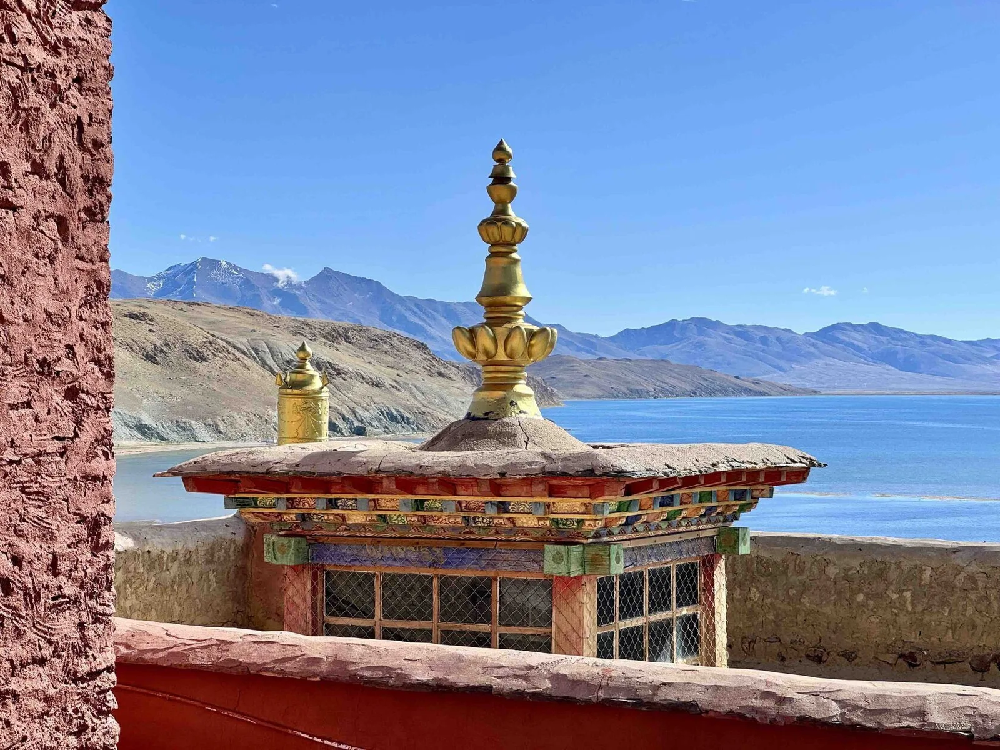
Программа тура
День 1. Чэнду.
Прибытие в Чэнду и заселение в отель. Днём получение разрешений для посещения Тибета. Вечером знакомство группы и ужин.
Чэнду
День 2. Чэнду — Лхаса.
Вылетаем в самый высокогорный аэропорт в мире, заселение в отель и отдых. Вечером небольшая прогулка по старому городу.
Старый город
День 3. Лхаса.
Посетим самый крупный монастырь Дрепунг. А вечером на закате у нас небольшой треккинг на холм, с которого открывается потрясающая панорама Лхасы и окрестностей.
Лхаса
День 4. Лхаса.
Сегодня посещения сердца Тибета — дворец Потала (зимняя резиденция Далай Лам), после посетим также его летнюю резиденцию Норбулинка, а на десерт самый важный и древний храм Тибета — Джоканг.
Дворец Потала
День 5. Лхаса — Гьяце.
Выезжаем в Тибет, в третий по важности городок Гьяце. По пути увидим священные великие озера и пересечём перевал Каро-Ла 5050 м, где недалеко от дороги расположился ледник семитысячника Ноценкансари.
Священные великие озера Гьяце
День 6. Гьяце — Шигаце.
Короткий переезд во второй по значимости город Шигаце. Посетим монастырь Ташилинпу, здесь резиденция Панчен-лам и самая большая статуя Будды в Тибете.
Монастырь Ташилинпу в Шигаце
День 7. Шигаце — Сага.
Длинный, но самый красивый и мощный переезд. Мы проедем несколько перевалов, один из них более 5000 м. При условии хорошей погоды, увидим невероятные виды Гималаев, Джомолунгмы (Эвереста) и ещё 7 других восьмитысячников, такое возможно только в Тибете!
Невероятные виды восьмитысячников
День 8. Сага — Манасаровар.
Направляемся к священному озеру Мансаровар. Пейзажи по пути продолжают быть невероятными. По пути заедем в высокогорную пустыню с барханами. Остановимся прямо на берегу озера.
озеро Мансаровар
День 9. Манасаровар — Дарчен.
Осмотрим древнейший храм Чуй. После нас ждёт первая кора, она будет вокруг озера Манасаровар (озеро жизни) и увидим Ракшас Тал (озеро смерти). Вечером доезжаем до Дарчен — отправной пункт на Кору. Подготовка к треккингу.
древнейший храм Чуй
День 10. Дарчен — Дирапук.
Начинаем основную Кору! Пройдём треть пути, по дороге будут пещеры, монастыри, флажки и ступы. И первые виды Южного и Западного лица Кайлаша, а к вечеру мы достигнем уже Северного лица. По пути встретим гималайских сусликов. Посетим монастырь Дирапук.
Кайлаш
День 11. Дирапук — Зутрулпук.
Кульминация нашего путешествия, нам предстоит переход к Восточному лицу Кайлаша через высокогорный перевал 5650 м, увидим озеро Гаури и Топор Кармы. По повериям именно после прохода перевала ты очищаешься и перерождаешься!
Восточное лицо Кайлаша
День 12. Зутрулпук — Дарчен.
Посетим монастырь Зутхулпук.
После обеда завершим основную кору, там где и начинали, в Дарчен. Праздничный ужин по случаю успешной пройденной Коры!
Завершение основной Коры
День 13. Дарчен — Сага.
Прощаемся с Кайлашем и озером Мансаравар.
Начинаем двигаться в обратном направлении в Сагу.
День 14. Сага — Шигаце.
Продолжаем двигаться из высокогорного плато Тибет к Лхасе. По более короткой дороге.
Ночуем в Шигаце на высоте 3900 м.
День 15. Дарчен — Сага.
Возвращаемся в Лхасу после обеда, свободное время на закупку сувениров и т. д. Прощальный ужин.
День 16. Лхаса — Ченду.
Летим домой после уникального таинственного путешествия по Тибету и Гималаям. Наполненные и перезагруженные.
[Фото из оригинала — перенос отдельно]
Фотографии в OneNote
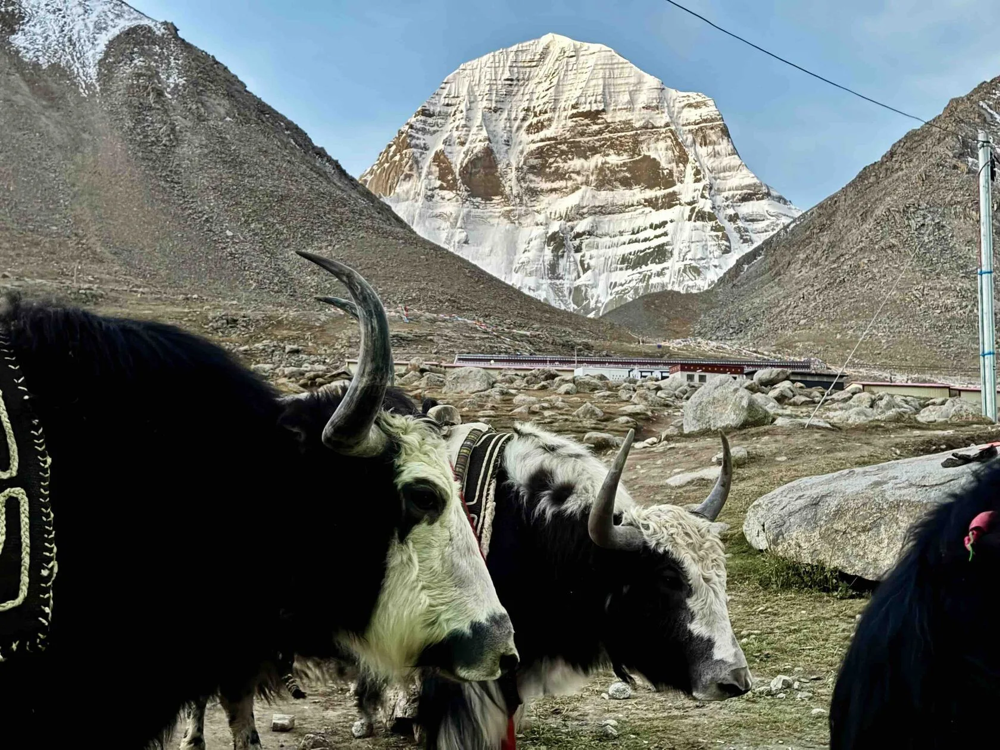
К оглавлению
Монастырь Сэра, Тибет
монастырь Сэра
色拉寺
Монастырь Сэра — это один из трёх великих монастырей школы гелугпа в Лхасе.
Расположен у подножия горы Пурбу Чок на высоте 3660 м, примерно в 5 километрах от центра Лхасы.
Его основали в 1419 году ученики Цонкапы, реформатора тибетского буддизма.
Название получил от тибетского слова «sera», что означает «дикая роза» или «шиповник»
Каждый день, кроме понедельника, монахи проводят дебаты — проверяют знание сутр друг у друга и обсуждают религиозные вопросы
На территории монастыря можно увидеть старинные храмы, статуи Будды и уникальные фрески.
📍Локация
[Фото из оригинала — перенос отдельно]
Оригинал заметки в OneNote
К оглавлению
Лхаса
🌁Лхаса -историческая столица Тибета. Город расположен в облачных высотах юго-западного Китая.
Основанный в V веке, Лхаса стала духовным центром буддизма, что привлекало паломников и исследователей со всего мира на протяжении веков.
🌇 Современный город активно развивается. Он стал мостом между традиционной тибетской культурой и современными технологиями.
На площади 30 тыс. кв.км проживает около 500 тыс. чел.
🌄Сердцем Лхасы является величественный дворец Потала, бывшая резиденция Далай-ламы, возвышающийся над городом.
🌅 Не менее знаменит и популярен буддийский храм Джокханг, где каждый камень дышит историей.
А улица Бакхор предлагает уникальный шопинг и культурный опыт, где можно прикоснуться к живой тибетской культуре.
💎 Посещение столицы Тибета - это не просто путешествие в другую часть Китая, это погружение в древнюю культуру, где каждый уголок говорит о богатом духовном наследии и истории.
К оглавлению
Монастырь Сэра
❗️Дебаты монахов монастыря Сэра.
🎇Монастырь Сэра был основан в 1419 и является центром для изучения и практики буддизма.
😄Монастырь известен дебатами монахов, которые проходят на открытых площадках и привлекают множество туристов.
😄Также он славится своими великолепными фресками, статуями и древними рукописями
😄Дебаты придуманы великим учителем Цонкапой в XIV веке, как метод обучения и проверки знаний монахов.
😄В дебатах участвуют монахи, которые обучаются в монастыре. Один монах задает вопросы, а другой отвечает, отстаивая свою точку зрения.
😄Участие в дебатах помогает монахам глубже понять буддийские учения, развить критическое мышление и улучшить навыки аргументации.
😄Во время дебатов монахи используют специальные жесты и движения, такие как хлопки руками и шаги вперед, чтобы подчеркнуть свои аргументы и придать им вес.
😄💎Дебаты в монастыре проходят каждый день и являются неотъемлемой частью монашеской жизни. Это ритуал, который соблюдается уже несколько столетий.
[Фото из оригинала — перенос отдельно]
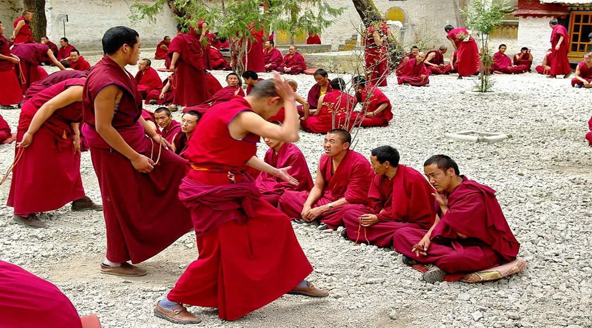
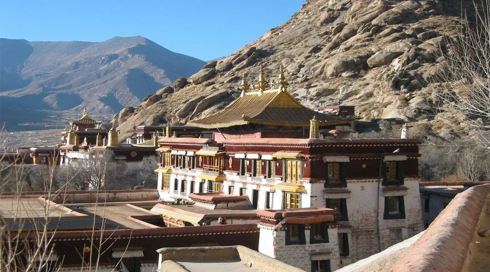
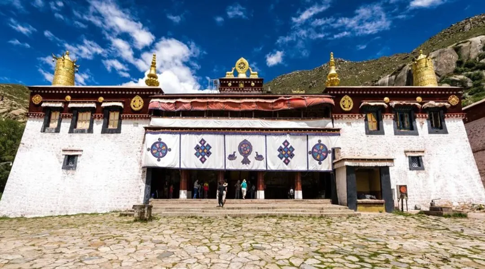
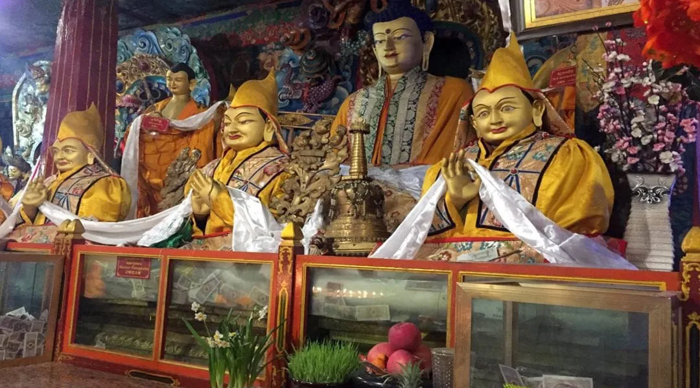
К оглавлению
Храм Джоканг
☀️ Храм Джоканг расположен в самом сердце Лхасы, столицы Тибета.
• Храм был основан в VII в., во времена правления короля Тибета Сонгцен Гампо. Он был построен для двух жен короля, которые были буддистками.
😱В храме хранится статуя Будды Шакьямуни в возрасте 12 лет, которая является самой ценной реликвией в Тибете.
• Храм Джоканг пережил множество нападений и разрушений, но всегда восстанавливался.
🌟 В 2000 году храм Джоканг был включен в список ЮНЕСКО, как часть ансамбля исторических памятников Лхасы.
▫️ Внутри храма находится множество статуй, изображающих различных будд, каждая из которых имеет свою историю и значение.
▫️ Храм Джоканг является действующим буддийским храмом. Его посещают буддисты со всего мира для молитв и ритуалов.
💎Джоканг привлекает туристов своей древней историей, архитектурным великолепием и духовной атмосферой. Посетители могут увидеть уникальные реликвии и почувствовать энергию тысячелетнего места поклонения.
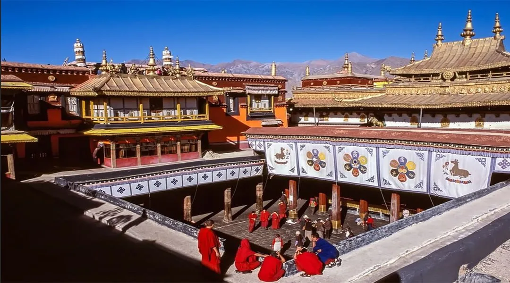
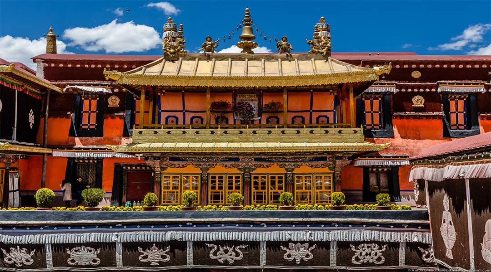
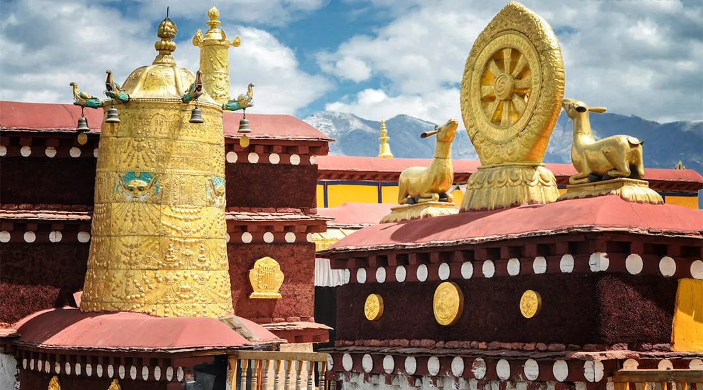
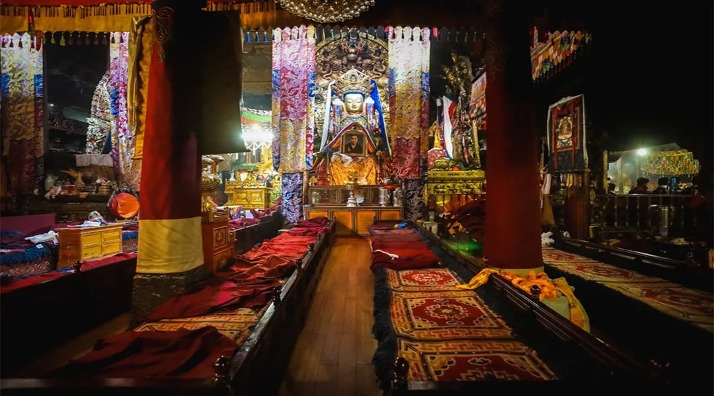
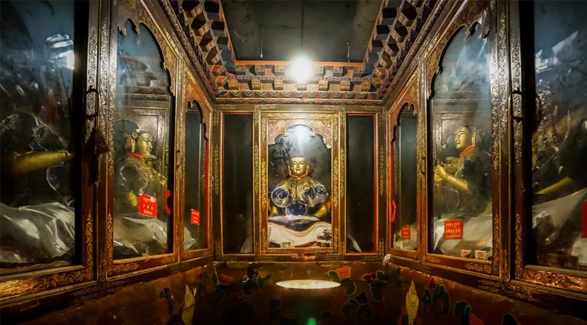
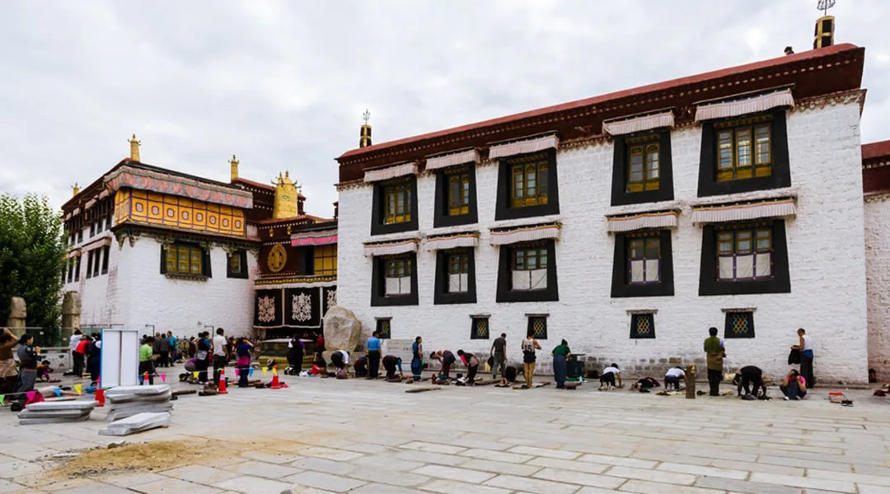
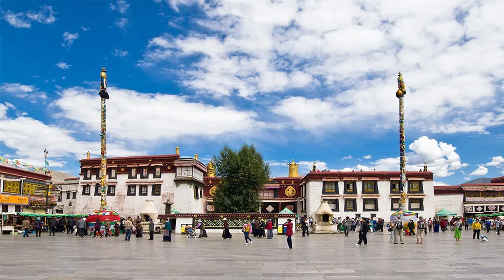
К оглавлению
монастырь Дрепунг
⛰Монастырь Дрепунг находится на склонах горы Гепхел, в 8 км. от Лхасы, столицы Тибета.
🧐 Он был основан в 1416 году учеником тибетского учителя Цонкапа, с целью обучения монахов и распространения учений школы гелугпа, (желтошапочная школа тибетского буддизма).
🔥Интересные факты:
▫️ В прошлом Дрепунг был крупнейшим монастырем в Тибете, где проживало до 10 000 монахов.
▫️Многие из Далай-лам, включая известного 14-го Далай-ламу, получали своё образование в Дрепунге.
▫️ Каждый год (летом) в Дрепунге проводится фестиваль Шотон, (фестиваль йогурта), во время которого на склоне горы разворачивается огромное священное изображение Будды. Праздник длится неделю.
▫️В монастыре проводятся дебаты монахов, где они обсуждают буддийские тексты, оттачивая свои знания и логические способности.
💎 Дрепунг пережил много событий, включая китайскую культурную революцию, но до сих пор остаётся символом тибетской культуры и духовности.
К оглавлению
Музей тибетской медицины
🏛Музей находится в Лхасе, столице Тибета, недалеко от дворца Потала. Первоначально был открыт в 1999 году, но в 2016 -2022 глобально был реконструирован.
Музей полностью посвящен тибетской культуре, истории и религии.
▫️Он является одним из немногих мест в мире, где можно увидеть настоящую тибетскую медицинскую практику.
Здесь собрано <1000 мед. документов, около 200 хирургических инструментов и 80 настенных мед. схем.
😱Самым впечатляющим экспонатом является танка (буддийская живопись) длиной около 600 метров, созданная более чем 400 тибетскими художниками в течение почти 30 лет.
▫️Эта картина, обвивающая стены второго этажа, изображает всю историю Тибета, буддизма, великих монахов и значимые исторические события, а также астрономические, технологические и научные достижения.
💎 В 2001 году правительство Китая внесло музей в список туристических объектов высшей категории "4А", что свидетельствует о его значимости.
[Фото из оригинала — перенос отдельно]
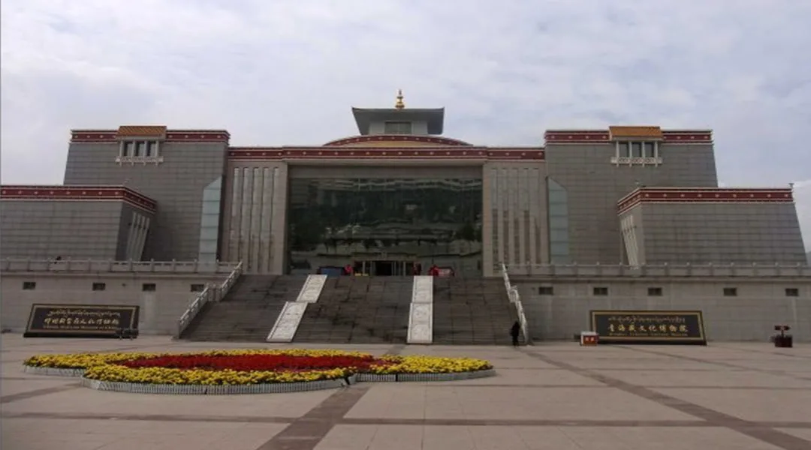
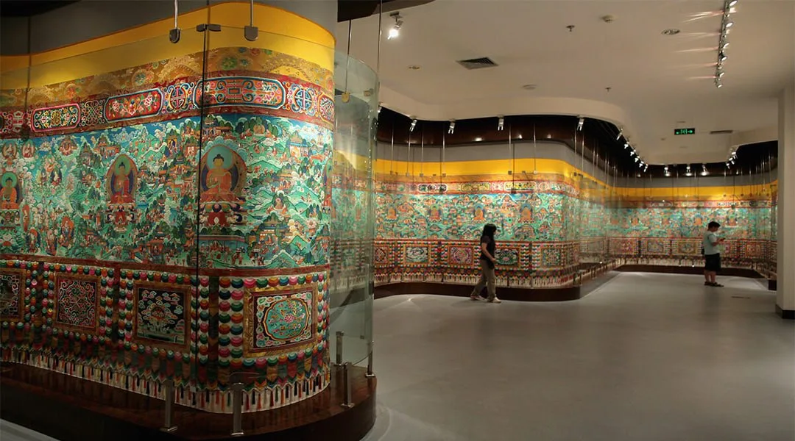
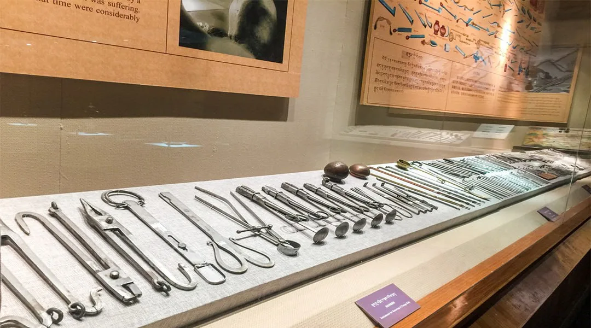
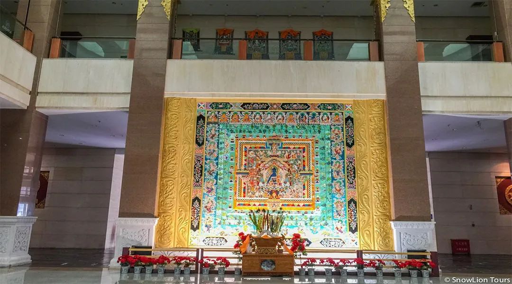
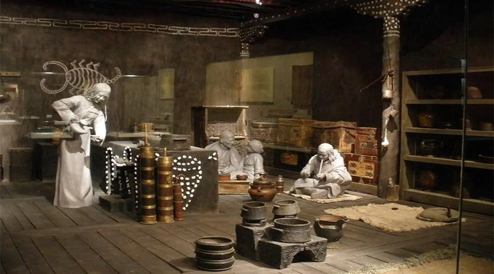
К оглавлению